Префектура Окинава · Онна · гостиница
Halekulani Okinawa: гавайская гостиница с вековой историей на побережье Онны
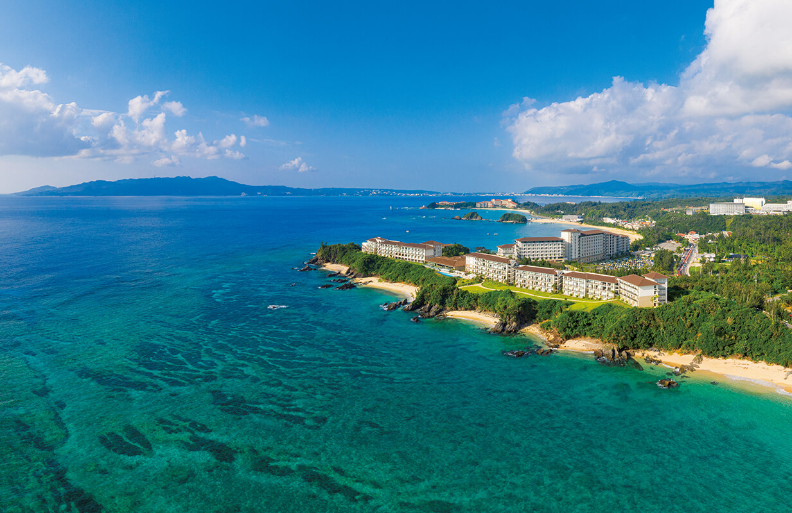
Гавайская Halekulani больше ста лет принимает гостей на пляже Вайкики, и за всю историю у неё был только один адрес. В 2019 году появился второй: побережье села Онна на острове Окинава.
История
«Дом, достойный небес»
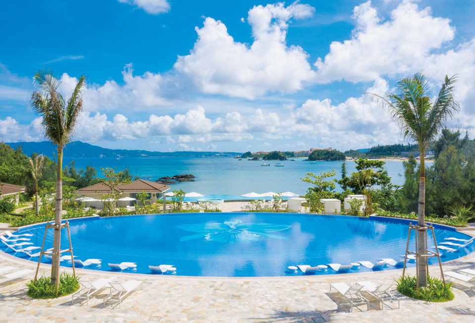
Halekulani на гавайском языке означает «дом, достойный небес». История гостиницы началась в 1883 году на пляже Вайкики с небольшой резиденции «Хау Три». В 1917 году у неё сменился владелец, а в 1930-х годах она получила нынешнее название. Примерно тогда же в самых живописных уголках мира начиналась эпоха нарядных курортных гостиниц.
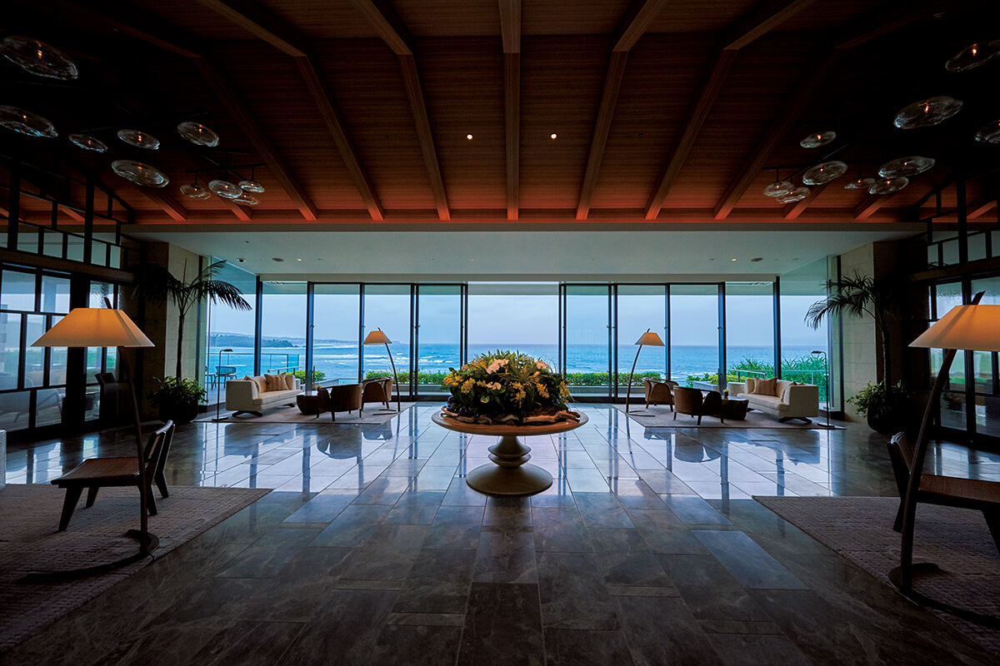
К 1932 году на Гавайях достроили большой главный корпус, а рядом стояли 37 бунгало. В 1981 году гостиница перешла японской компании Mitsui Fudosan, и с этого, как говорят, началась новая глава в отношениях японских и гавайских гостиниц. Владелец сменился, но прежнее отношение к гостю здесь сохранили: тёплый приём и стремление подарить лучшие дни отпуска.
Первым адресом за пределами Гавайев стало село Онна на западном берегу острова Окинава. Гостиница стоит у моря, которое особенно красиво и ценно для океанологов: природа здесь почти не тронута, а побережье входит в квазинациональный парк, и его называют «последним красивым местом Окинавы». Halekulani Okinawa открылась 26 июля 2019 года, и поклонники гавайской гостиницы ждали этого дня с нетерпением.
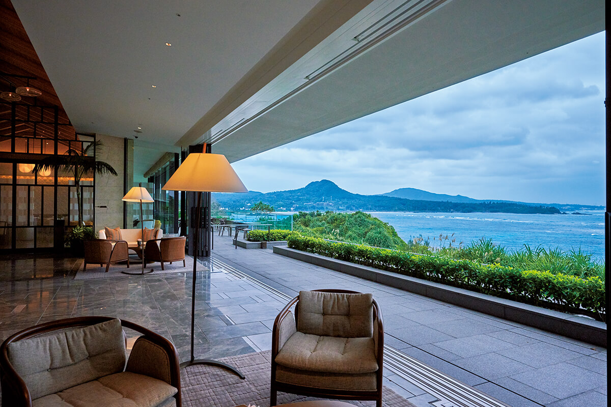
Участок занимает около 87 000 квадратных метров, почти вчетверо больше гавайского. Многие постоянные гости гавайской Halekulani приезжают сюда, чтобы проверить, такой ли здесь приём и так ли здесь уютно.
Во всех номерах окна выходят на море. На балконах стоят стол и стулья, чтобы коралловую синеву и запах моря можно было почувствовать, не выходя из номера. В отделке много дерева, а белые и земляные оттенки создают спокойную, чистую обстановку. И хотя бы раз стоит посмотреть на закат, откуда угодно на территории: солнце садится в море, без конца меняя цвет, и это зрелище по-настоящему трогает.
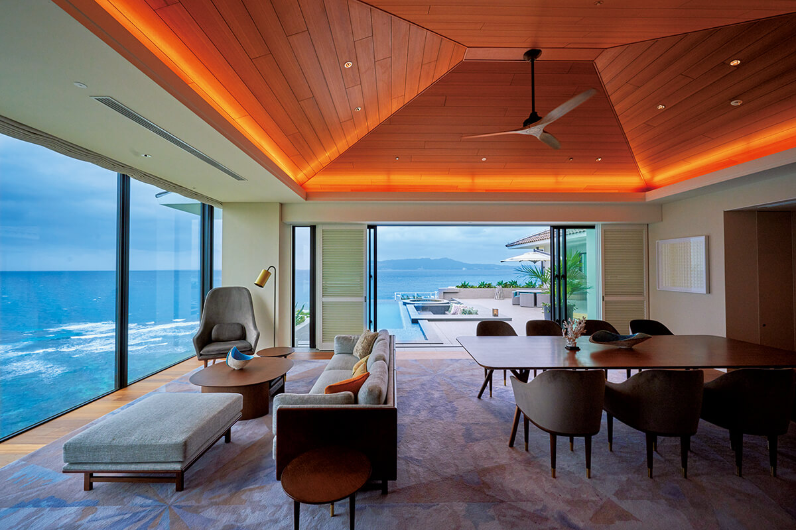
Отдых
Курорт для долгого отпуска
На большой территории много заведений и ресторанов, поэтому одной ночи здесь мало: чтобы спокойно попробовать всё, лучше остаться на несколько дней или дольше. Главная цель курортной гостиницы это отпуск и мир, непохожий на повседневный. Стоит пользоваться всем, что есть, и смело просить персонал о том, что хочется.
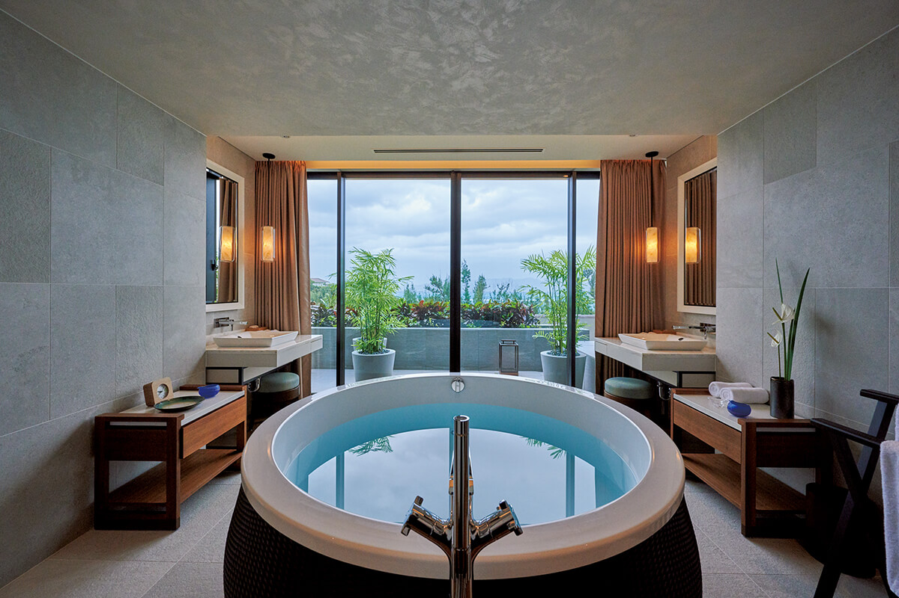
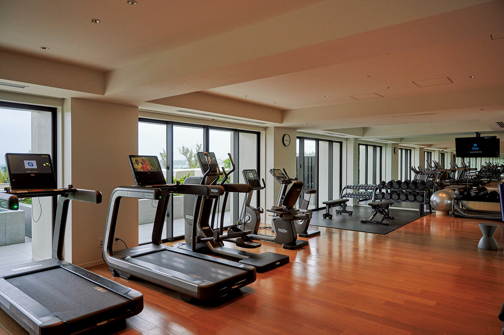
Номера расположены в двух главных корпусах, которые здесь называют крыльями. Семьям и компаниям друзей, которые хотят шумного отдыха, подойдёт пляжное крыло Beachfront Wing на востоке территории. Перед ним находится Orchid Pool с той самой орхидеей, а рядом ещё два бассейна: тихий и детский.
Тем, кто ищет спокойного отпуска, лучше выбрать Sunset Wing на скалах в западной части, откуда видны самые яркие закаты. Ближайший к нему бассейн Ocean Terrace Pool открыт только для гостей старше 16 лет, и у воды течёт неспешное окинавское время.
Номера
Номера на любой вкус
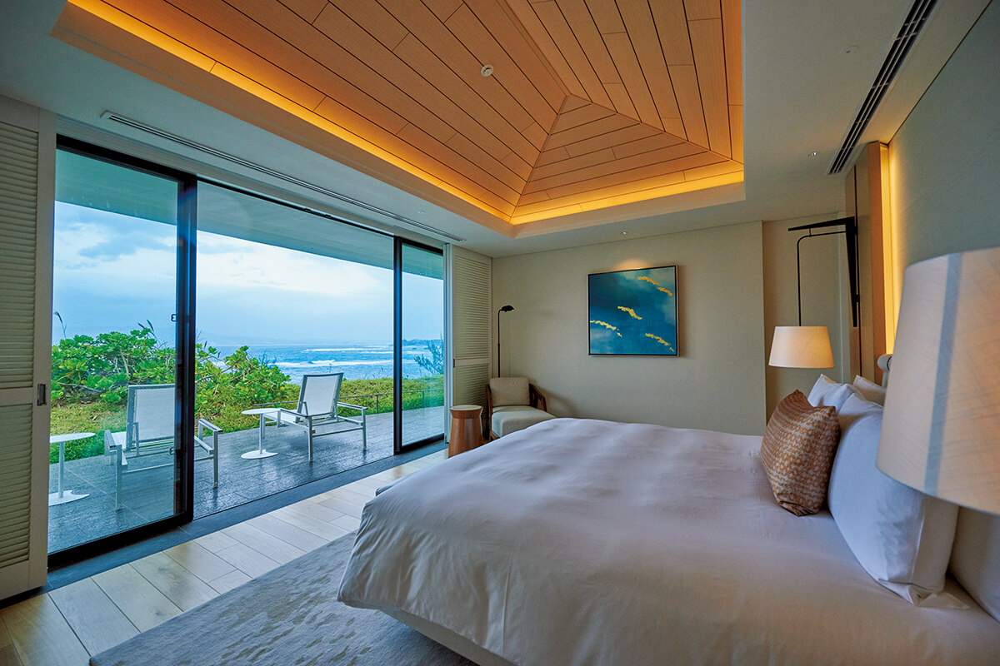
Всего в гостинице 360 номеров: 308 стандартных, 47 сьютов и ещё 5 вилл. Даже самый маленький номер занимает 50 квадратных метров. В интерьерах использован фирменный приём Halekulani «семь оттенков белого»: простой светлый фон подчёркивает синеву моря и неба. Штор на окнах нет, вместо них деревянные жалюзи, которые называют Halekulani Shade.
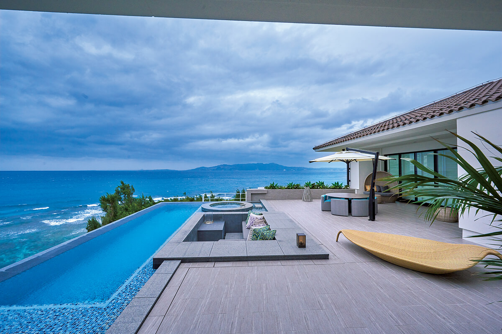
Ближе всего к морю стоят виллы. У каждой свой бассейн и природный горячий источник: три виллы Cliff Villa с одной спальней по 82 квадратных метра и две Halekulani Cliff Villa с двумя спальнями по 165 квадратных метров.
Горячая вода из источника в номере есть только на виллах. Японцы знают толк в онсэнах, и купель с видом на море на курорте объясняет, почему многие гости хотят жить именно здесь.
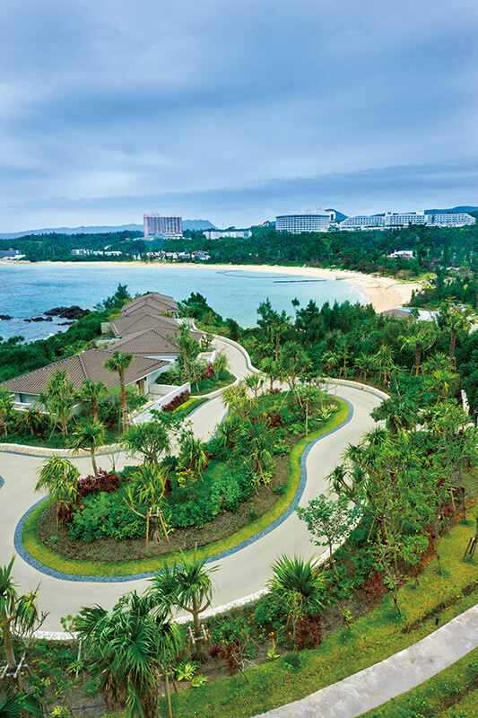
Природа, обычаи, традиции и кухня у гавайской и окинавской гостиниц разные, но здесь видят в этом достоинство.
«Мы хотим, чтобы эти различия проявились в блюдах, в посуде ресторанов, в программах для гостей и в товарах бутика»
управляющий гостиницей
Кухня
Ресторан SHIROUX
В гостинице несколько ресторанов: японский, стейк-хаус, ресторан, открытый весь день, и бар. Самый необычный из них это SHIROUX: «сиру» на окинавском значит «белый».
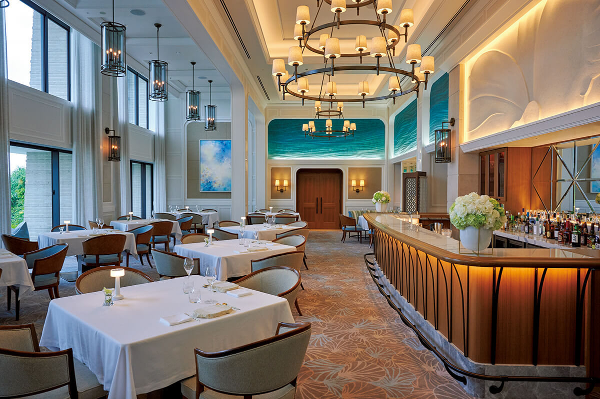
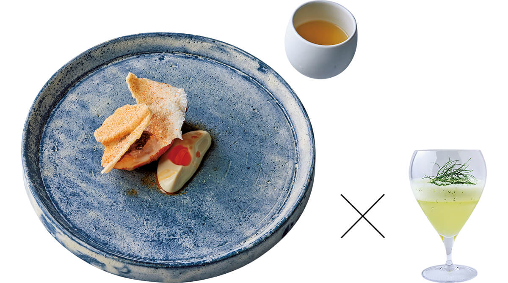
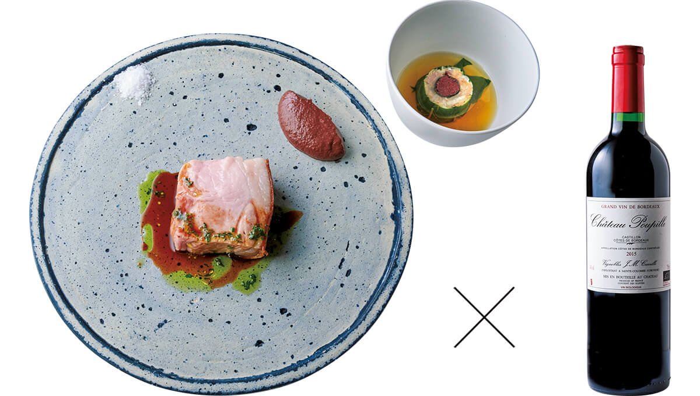
Halekulani Okinawa
- Адрес
- префектура Окинава, уезд Кунигами, село Онна, Накама, 1967-1
- Телефон
- +81 98-953-8600
- Номера
- 360
- Цены / Вход
- от 55 935 иен за номер без налога, с сервисным сбором (2020)
- Заезд / выезд
- 15:00 / 12:00
- Как добраться
- на машине из аэропорта Наха около 1 часа 15 минут; на автобусе-лимузине из аэропорта около 1 часа 30 минут
Фото: Хироси Абэ.